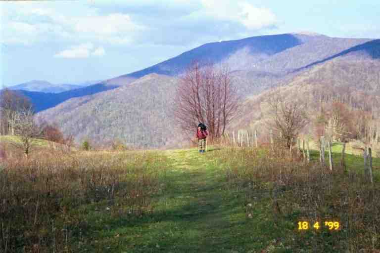
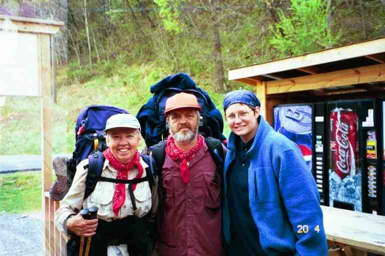

There was quite a bit of climbing coming out of Hot Springs on the morning of April 15. The first landmark was Lovers Leap Rock where we stopped and looked back down at the town. From this height, we could see that the town was nestled among the mountains in a river valley. The trees in the valley and in the town were an early spring green.
Higher up we came to a beautiful little pond, surrounded by lush vegetation and with some really nice tenting spots. We stopped to talk to BROOKS and LAUREL who were picking mushrooms. BROOKS assured us that they were edible. He had spent a lot of time in the mountains hunting with his father and was very knowledgeable about plants. He and his family had been picking Morel mushrooms for years. It would be about a week before I would finally break down and sample some. It was still early so we kept on going, leap frogging the two of them the rest of the day. We finally arrived at Spring Mountain Shelter where we decided to stop. BROOKS and LAUREL, as per usual, went on a little further, to find a spot to tent alone.
When we arrived the shelter was full, occupied by CHECKDAM, PILGRIM, GREYLOX, ARIZONA and a few others. We joined a number of hikers who were setting up about 100 feet beyond and above the shelter in a little flat area among the trees. It was a beautiful little spot covered with a cushion of dead leaves. We camped with SLIPPER, ALASKA, WOODPACKER, QUIK and NO TIME, CHRISTOPHER ROBBINS and GIT BACK. I watched with admiration as GIT BACK set up her tarp which would serve as shelter for her and her dog CASSIDY. It was turning cold but she did not seem worried.
I will now describe our activities at this site and try to give some idea of our typical evening routine.
*********
The first thing we did was remove our heavy boots and put on our sandals to give our feet a rest. We then set up the tent. While I went to get water at the spring far down the hill below the shelter, MA began preparing everything for the night. She removed everything we needed from the backpacks. She unrolled and inflated our sleeping pads (Thermarests) and placed the sleeping bags over top. Our clothes bags were also placed in the tent. These were needed in case we wanted to wear something different at night to sleep, i.e. warmer or drier. Also we often made a pillow by stuffing clothes in the stuff sacs from our sleeping bags. (Other times we would use our fleece and/or jacket as a pillow.) Ma also removed all the food from the packs as well as the cook set (stove and pots), dishwashing items and our personal hygiene items. She also found time to take out her eyes, i.e. remove her contacts. This was a tedious and complicated job on the trail, because of the need for extreme cleanliness during the process. When I returned, I cooked supper because it only involved boiling water and adding two packages of pasta and/or rice and sauce (Lipton's). Most hikers did not carry bowls or plates, they simply ate out of the pan. It was more convenient and meant carrying less weight. We carried two light insulated cups for our meals. The cups each held two cups and were more convenient than a plate. We used them for our meals, soups, cereals and beverages. There was a line half way up the inside of each which allowed us to measure one cup of liquid. We each had a lexan spoon but no fork, and we used our pocket knife to cut. We eventually started to carry a plastic knife to spread peanut butter which was making a mess of my pocket knife. I suppose we could have used the spoon.
After supper, I added a little water to the pan, scraped the sides and then drank the water; there was no waste. Ma washed the dishes with a small quantity of camp soap. She then set aside all the snacks for the next day. Just before bed we would brush our teeth and wash up a little and also do our toilet chores, after which we would wash our hands with an alcohol based cleaner (Purrell).
All the food, and toiletry items were then placed in our food bags and hung high up in a tree, out of reach of animals (they think soap and toothpaste is food). The trick was to have the bag hanging over a branch at least 2 feet below the branch, 6 feet off the ground and 4 feet from the tree trunk. Our packs and boots were placed in the vestibules, covered areas under the fly of the tent, just outside each of the doors.
*****************
This particular evening we had a little treat. We went down to the shelter where ARIZONA was showing off his cooking skills. ARIZONA is one of those who likes to make his meals by using separate ingredients and spices rather than all inclusive packages. His supper that evening had included mashed potatoes and gravy. He then made brownies which he shared with everyone. I am not a big brownie person, but the sugar was appreciated.
When we returned to the tent site, I decided to start a fire in the fire ring, as I often did in the early day of the hike. I am not usually very talented in the fire starting department but I liked doing it on the trail because it was really easy. I picked up branches of various sizes, piled the smaller ones in the ring, covered it all with a big pile of dry leaves, criss-crossed a few large branches over top and set the leaves on fire. It worked every time.
The next day was sunny and started out cold and windy, making for great walking. By late morning the trail dropped down to a highway on the Tennessee - North Carolina border at Allen Gap where there was a little run down cigarette store which also sold snacks and ice cream. It was called the State Line Service Station. It did not sell gas. We bought some ice cream and junk food and sat out on the small abandoned pump island to eat our snacks with QUIK and NO TIME. Later LAUREL and BROOKS arrived to buy sandwiches that had been advertised on a sheet attached to a tree just before the road. The old lady running the place said she did not sell sandwiches and made a joke about false advertising. She did say that she had sandwich cookies (Oreos) and ice cream sandwiches. They were not amused. We later found out from RAINDANCER that she received trail magic when she went through here a few hours after us. SEABASS and Aimee left a bag containing bananas, pop and oatmeal cookies hanging from a tree just before the road.
We then climbed 1800 feet over the next 5 miles and stopped early for the night at Little Laurel shelter after a short 8.6 mile day. LAUREL and BROOKS arrived and sat and chatted for over an hour with us, during which time LAUREL filtered some water for both of them while BROOKS talked on. They both said their parents lived not far from the trail in southern Virginia and would love to meet us. They gave us the addresses and phone numbers before they finally headed out to find a camping spot further on. We spent the night with RAINDANCER, PHIN, SONGBIRD and PT. RAINDANCER got most of her supplies in maildrops that her mother sent her. It included lots of dehydrated meals. She is from San Antonio Texas and has lots of spicy meals. Here is a quote from her journal ( www.trailplace.com ) for this shelter: "We ran into Ma and Pa at the shelter tonight. We haven't seen them in a few days. It was good to see them. Pa helps me finish my meals when I can't eat them. Tonight he got spaghetti (dehydrated spaghetti sauce) with hamburger and lots of veggies." On the subject of food here is another quote of hers from a few days later: "I am so hungry for a Baked Potato with all the trimmings. I am even craving Poutine. Ma & Pa are from Canada and they make it sound so good!" The next day was sunny and cold with a number of good climbs and some nice views. For a long distance in the middle of the day, the trail followed an abandoned road through a wooded area with bear warnings posted on trees. The road started climbing and was rutted from erosion. We could hear motorized vehicles below us but fortunately they never appeared. The trail leveled out and came to a quiet grassy clearing where we came upon the Shelton Graves, where we sat and had a break. The Sheltons were an uncle and nephew who were serving in the Union army during the Civil war. While returning from their regiment in North Carolina for a family reunion at their home in the mountains of Tennessee, they were ambushed and killed by a nearby Confederate force. A young 13 year old lookout was also killed and buried with them.
At the end of this 12.6 mile day, we arrived at Flint Mountain shelter with light snow flying down around us. It did not accumulate but it was a sign that we were in for a cold night. We had the same group as the previous night and also ALASKA. PT showed ALASKA how to take apart and clean her whisperlight stove which was clogged. We spent a long time talking to PT (PREHISTORIC TONY). He is one of the most intelligent people we met on the trail. He was confident to the point of being cocky. We had great conversations. He was unsure if he would be finishing his hike because there was a possibility he would be called back to duty with the marine reserves.
PT was a very experienced hiker who has done many of the major trails in the US and in other parts of the world. He had started his hike at the end of January in Duncannon Pennsylvania when a friend he had met while hiking the trail in 1997 asked him to accompany her. So he quit his job as an engineer to do so. They had hiked and snowshoed for over 550 miles, arriving in Killington Vermont in mid March, where they had a falling out. He was depressed and out of work so he decided to go down to Georgia to start the southern part of the trail. The emotional details are available at his site by following the link to the Appalachian trail and then Hiker Home Page and then to his journal.
I woke up at first light and saw that a wet snow was falling. I went to relieve myself and rushed back to my warm bag. Everyone seemed reluctant to get up. When we finally started to stir, all the girls got dressed inside their sleeping bags. They were all getting good at this.
It had been clear during the night that ALASKA had a problem. She froze all night. Against everyone's advice, she had sent her sleeping bag home from Hot Springs, and purchased a fleece bag (essentially a fleece blanket sewn into the shape of a bag). The first thing she said when she got up in the morning was: " I made a big mistake". This was the beginning of the end of her hike.
Soon after leaving the shelter, we came upon LAUREL sitting in front of her tent which was set up right next to the trail. We asked about BROOKS and she said he had gone down to the next road to hitch into Erwin to get some equipment. It became clear that they were splitting up and he had to get equipment to continue his hike. She refused offers of help so we continued on.
We dropped down about 800 feet to two paved country roads and crossed our first stile of the trip to get over a fence. We then started a major climb going up 1700 feet in less than 3 miles. The trail first followed a stream up a dark ravine with soft moist ground and moss covered rocks. It then reached a steeper section and began switching back and forth as it went up. The soft ground made our footing a little difficult. Everything was damp making it difficult to find a spot to stop and sit for a break.
During the early part of this climb we met DELDOC going the other way. He was a retired doctor from Delaware who was on a mission. He carried a GPS with him which was automatically recording his position every 5 seconds. In this way he was going to be mapping the entire Appalachian Trail with great precision. This information could later be used by the ATC in preparing maps. During a good portion of our hike we would see his entries in many shelter registers. They all said the same thing: " DELDOC passing through mapping the entire AT."
We arrived at a shelter in the early afternoon, where we met RAINDANCER, SONGBIRD and PHIN again. We all decided to push on to a campsite that was a further 6 miles ahead. MA and I left quickly to insure we would get there early enough to do our chores before dark. The campsite was at Low Gap in a little ravine that the trail contoured. We could see everyone as they went by above us. It was a 15 mile day and we were tired. Picture taken a short time before arriving.

We were soon joined by the three girls. RAINDANCER was all excited because a man in a truck stopped at the last road crossing and ran over to them with a pan of chocolate cake which he offered them. Actually SONGBIRD did not have any because it contained milk. Soon after, LAUREL came by but said she was going to go on a little further. Everyone felt sad for her.
The next day we hiked 14.3 miles to No Business Knob shelter. The highlight was going up Big Bald early in the morning.. It was a long hike up to the summit of the large grassy mountain. Once there we got a great 360 degree view of the surrounding countryside. The last few miles of the day, the trail was dug into the side of the hill as it contoured a few mountains. We shared the shelter with the girls. Three young men tented at the campsite in the nearby woods and socialized with us: CHICKEN, CABOOSE and ICEHOUSE.
The following day was April 20 and we were on our way to Erwin, 6 miles away. We saw the Nolichucky River and the railroad tracks that paralleled it long before our descent. When we got down off the mountain, the first thing we saw was Uncle Johnny's Nolichucky Hostel. At this spot the trail simply comes out of the woods to get on the road, crosses the river on a bridge and then goes back up the mountain on the other side. Uncle Johnny was well situated right at the bottom of the hill to serve the hiking community. Unfortunately, hikers wanting to go to town had a ways to go because the town stretches for a number miles to the west and there are no amenities for 2 miles. The Post Office and downtown Erwin are another 2 miles further west.
The hostel consists of a small store which sells snacks and some gear, a bunk house that holds 8 and a large covered patio out front with picnic tables. The hostel has a TV set and VCR and a large collection of movies. The cost for the night was $10. It was full and RAINDANCER had arranged to sleep on the couch for $5. (Us and RAINDANCER)

The hostel had only been open a few years. Johnny hiked the trail a few years ago and decided to open a hostel to serve the hikers. He found this spot near Erwin, purchased it and moved here. When the first hikers started arriving, the next door neighbour panicked at the sight of the unkempt crowd and sold his place.
FOODBAG was here nursing his feet. He had gone to the outfitter in Johnson city where he got Superfeet inserts and was hoping it would solve his problem. LAUREL and BROOKS were sitting together on a bench having just reconciled their differences. Everyone tried to ignore them.
We bought a couple of T-shirts advertising the hostel and Uncle Johnny called the Best Southern Motel to reserve us a room. We would have to try and hitch into town. After socializing for a while, we put on our packs and crossed the bridge and then headed down the road to town. After a short time a van pulling a trailer with a stack of kayaks stopped to pick us up. It was a group from a river rafting and kayak company. They were crowded into the van with all their gear but made room for us.
At the motel we met a number of hikers including CANEBREAK, CHICKEN, CABOOSE and SLIPPER. LAUREL and BROOKS were also staying at the motel. We got cleaned up and went to Pizza Plus for the all you can eat pizza and salad lunch. We then went to the dollar store and the small grocery store nearby to resupply. The young girl at the cash could not understand why we would hike and was quite concerned for our safety. We had not told her that we were hikers but I think the large quantity of Pop Tarts and Lipton meals gave us away.
In the late afternoon we hitched into downtown with two ladies who only picked us up because we were older. We went to the Post Office and then to the Library to use the Internet and check our email. We then had great Burritos at a restaurant that Uncle Johnny had recommended. After supper we decided that it would be easier to get a ride if we first walked out of the downtown area to the road that lead to our motel. We had only gone a block and were cutting through a parking lot when a car pulled into the parking lot and offered us a ride. The lady had recognized us as hikers and knew we would need a ride to the other end of town. She explained that the town was becoming more and more hiker friendly and that her church was considering having pot luck suppers on a regular basis for hikers.
That night we did our laundry in the basement of the motel in the professional machines that they used for their linen and sheets. From the front of the motel we could see the mountains that we would be climbing the next day. There was an orange glow of a fire on the mountain and lots of smoke. We worried that it would affect our departure the next day, but it turned out to be a controlled burn and was not near the trail. It was quite spectacular.
The next day we relaxed in the morning and had lunch again at Pizza Plus. We then hitched a ride in the back of a pick-up truck to Uncle Johnny's where I bought a new pair of socks. We walked across the bridge and got back on the trail.